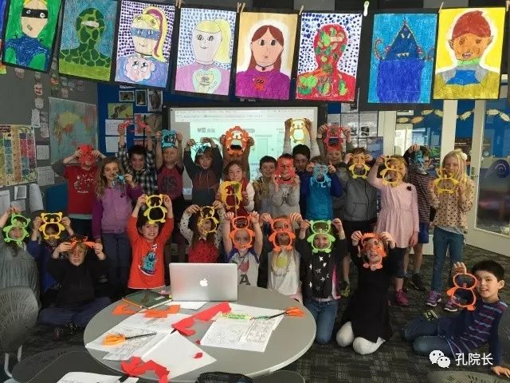

每日一篇——志愿者风采/我在新西兰达尼丁教汉语【上/工作篇】
 526
526
来源：原创 作者：刘芯雨
当我敲下这篇文章的时候，正巧是一个阳光明媚的周末午后，院子里的樱花树随着南半球初春的轻风微微晃动，空气中飞舞着蜉蝣，收音机里传来欢快悠扬的乡村音乐，等到一首曲毕，那头传来温柔的女声“The joy of going away is coming home”……
时光荏苒，岁月飞逝，将近一年的志愿者时光转眼已进入尾声。翻一翻日记，才发觉自己在这片地球另一端的陌生国土上经历的兴奋、不安、憧憬、感恩，甚至是伤心难过等种种情绪和经历，都还历历在目。
路遥说，“人生的道路虽然漫长，但紧要处常常仅几步，特别是当人年轻的时候。”如果这话是有点道理的话，那么二十三岁的那一年在新西兰做汉语教师志愿者可能是我做过的最明智的选择之一。在为祖国的汉语教学事业尽一份绵薄之力时，我也在成长，这些收获来自包括教学在内的工作、生活和旅行的方方面面。
一、 工作篇
教学上，本人常驻达尼丁（Dunedin）的塔呼那师范中学（Tahuna Normal Intermediate School），承担6所中小学，共10个班级约270人的汉语教学工作，每班每周一个课时，每周需教学10个学时，剩余25小时于塔呼那师范中学值班备课。
在这一年期间，带领所有零基础的学生学习数字、颜色、一般疑问句对话以及日常用语和课堂用语，并通过玩Battleships、Guess Who 、Go Fish和Kahoot等新西兰学生已熟知的游戏，踢毽子、写书法、画面具、剪纸、做灯笼、欣赏传统音乐和学习功夫等具有中国特色的文化活动来巩固语言性学习。
此外，还有介绍中国的主要城市及其文化和人民，如首都北京的长城、故宫，西安的秦始皇兵马俑和八大菜系等。没有人不热爱美食，也正因如此，在班级老师的支持下，我和有些特别感兴趣的班级各自在家准备了中华美食，在早茶或午餐时间分享各自带来的食物。
文化活动方面，我与另外两位志愿者共同举办了三场午餐时间的书法兴趣俱乐部活动，激发了学生对汉字书写和中华文化的兴趣,其中部分优秀作品被选出参加了孔子学院举办的书法比赛；组织了为期三天的“体验武术”活动，奥塔哥地区的11所学校，850名中小学生都参加了此次活动；在中新友好文化周举办的“中国文化日”活动，向塔呼那中学及周边9所学校的125名师生展示了包饺子、编中国结和抖空竹等独一无二的中华魅力；也在学校的招生公开日中展示了汉语课堂的一隅，为学校吸引下一年度的生源尽了一份薄力。

我们的剪纸课
从教学经验中，我认识到人无论何时都要无条件自信，只有自己相信自己，说话有底气，才能让学生尊敬你，老师信赖你；要有原则，不能因为只是志愿者的身份，不了解当地文化就不能树立威信，有奖有罚才是好老师；要根据每班实际情况调整教学，对待不同年龄层的学生，话题深度也应有所差别；要有多手准备，尤其是无需任何道具就能调动气氛的小游戏，能在投影仪坏了或课时多了的情况下及时救场。
此外，课堂外与老师的沟通交流非常重要，一方面与班级老师交流课程进度会有利于教学的顺利进行，尤其是做文化课活动之前需要班级老师帮忙准备道具等。
例如，如果要上画面具，剪纸，书法等内容，一般会弄乱教室，提前一周与班级老师说好需要的材料和空间，留给班级老师调整汉语课前后的课程内容，体现我们志愿者老师应有的态度和礼貌；另一方面，早茶和午餐时间在员工休息室的聊天意义非凡。众所周知，这两个时间点大部分的老师都会在场，因此，也是身为老师中一员的志愿者每天必然会出现的场合。一开始时可能会觉得害羞或不知如何开口，毕竟周围可能只有我一个外国人，这时候一定要勇敢的去自我介绍，各个击破，一般来说老师们都会热情的回应自己，这样一回生二回熟，之后在路上或员工室遇见也就可以自然的开展谈话了。每次坐在不同老师的身边，主动问候每个人，长久以往，所有人都会记住你，也会告诉你他们今天发生的事情。
至于谈话内容，一开始当然是自我介绍较多，包括自己来新西兰的原因、在中国的身份、城市以及人口、家庭成员等。西方人多对数字敏感，通常提到一个新的地方时都会问及面积和人口，提前查好这些基本信息，会让他们大吃一惊，当然也会令人印象深刻。其次可以了解谈话对象的职责，等到互相熟悉后，就可以谈论一些大家都关心的话题：天气、运动（尤其是全黑队）和前段时间大热的美国大选等。积极正面的员工室谈话益处多多，不仅能增进与老师之间的友谊，还能知道这个老师马上要抱孙子或孙女了、那个老师要结婚了，每当这个时候学校就会在员工室的墙上贴上海报，甚至会有竞猜，猜新生儿的性别、年龄和出生日期，十分有意思，还有哪家有困难了，大家也会一起捐款，也正是因为这种凝聚力，整个学校才能朝气蓬勃，社区之间才会团结。
在这片净土上，无论你肢体是否健全，智力是否正常，都可以在普通学校和正常人接受相同的教育，甚至会有教助老师全程陪伴辅助自闭症或有听说读写障碍的学生学习。
新西兰的教育并不拔高学生成绩，高中之前没有任何正式的考试，相反却极其注重培养学生的观察、绘画、音乐、感知和爱的能力。这里初二学生做的数学题虽然只是国内小学水平，但却能在艺术课上学到“立体主义”，科技课上学习制作报警器，厨艺课上感知不同食物的气味……
作者简介：
刘芯雨，华中科技大学外国语学院研究生，2016年1月—12月担任新西兰坎特伯雷大学孔子学院汉语教师志愿者，任教于达尼丁Tahuna Normal Intermediate School。

【下/生活、旅行篇 链接：http://wz.chinesecio.com/?p=12442】